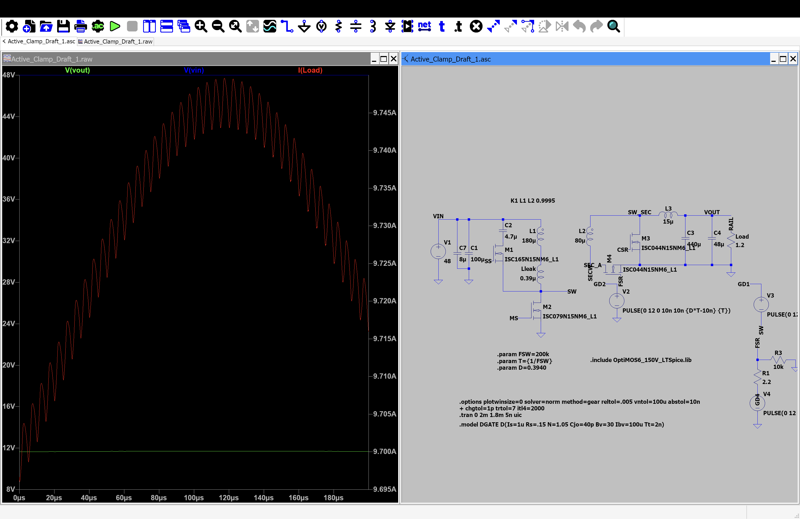
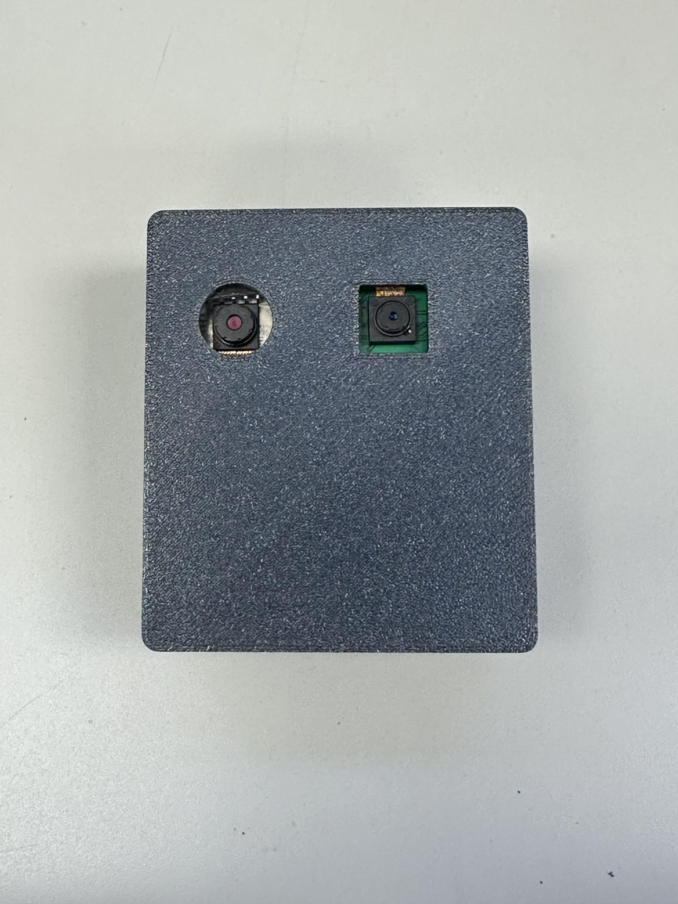
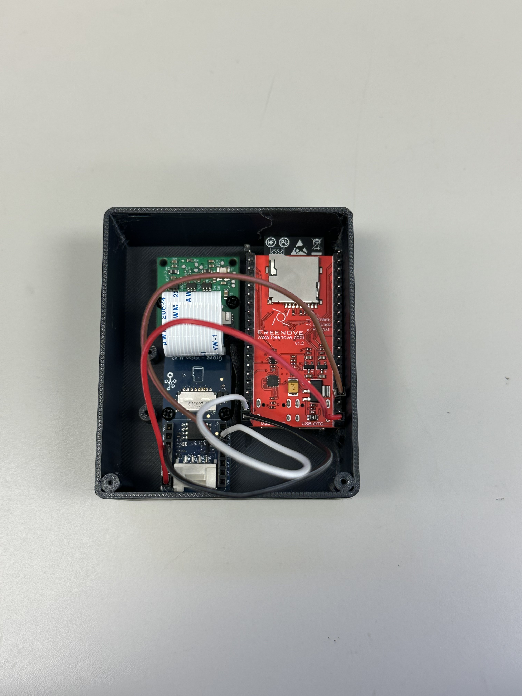
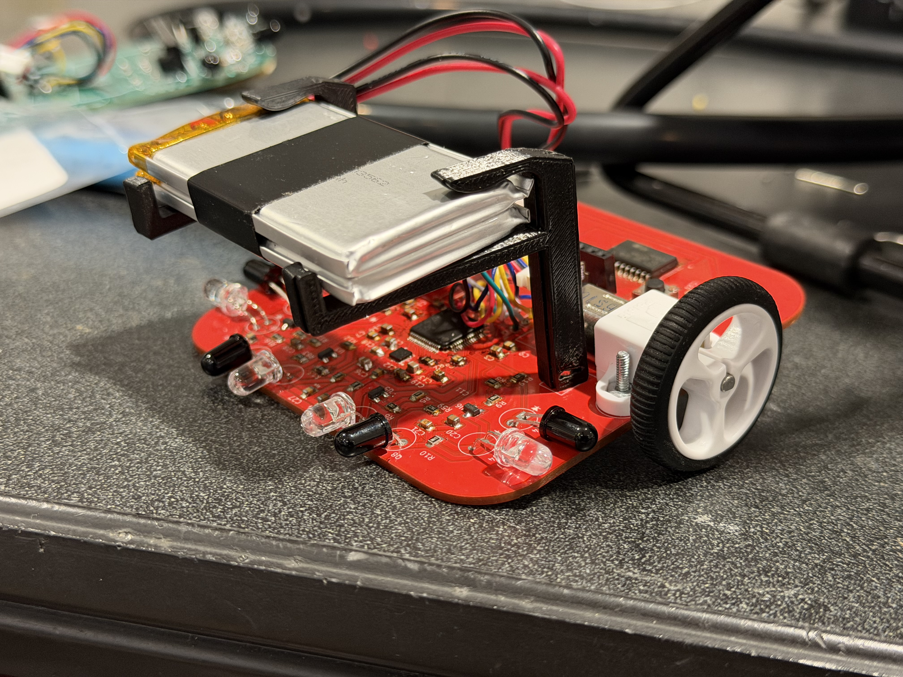
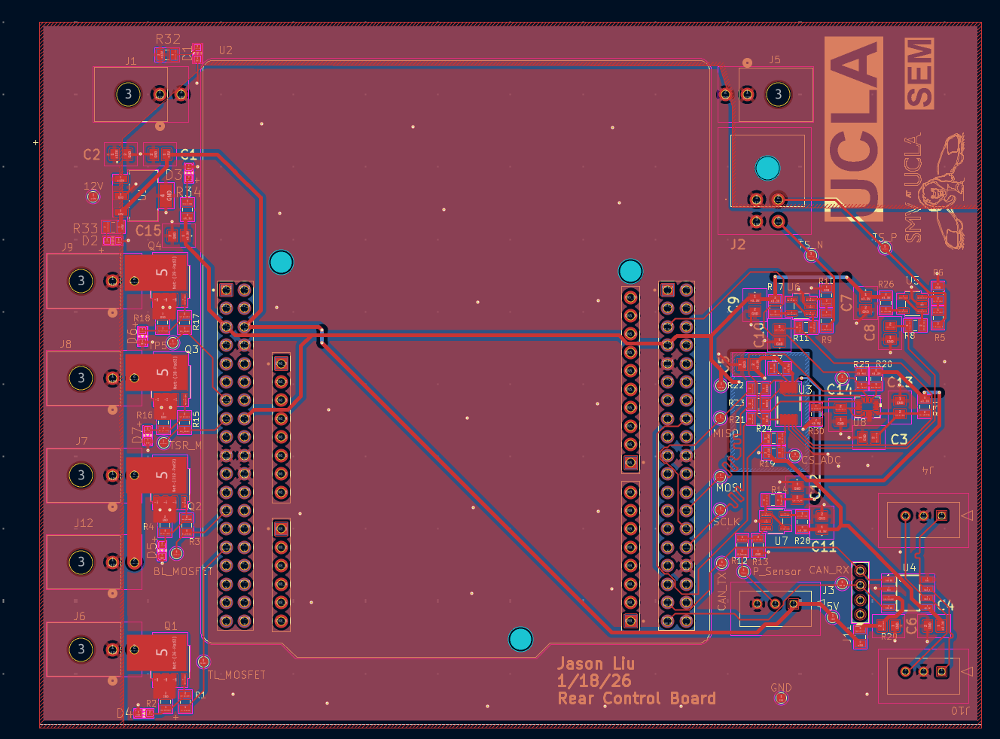
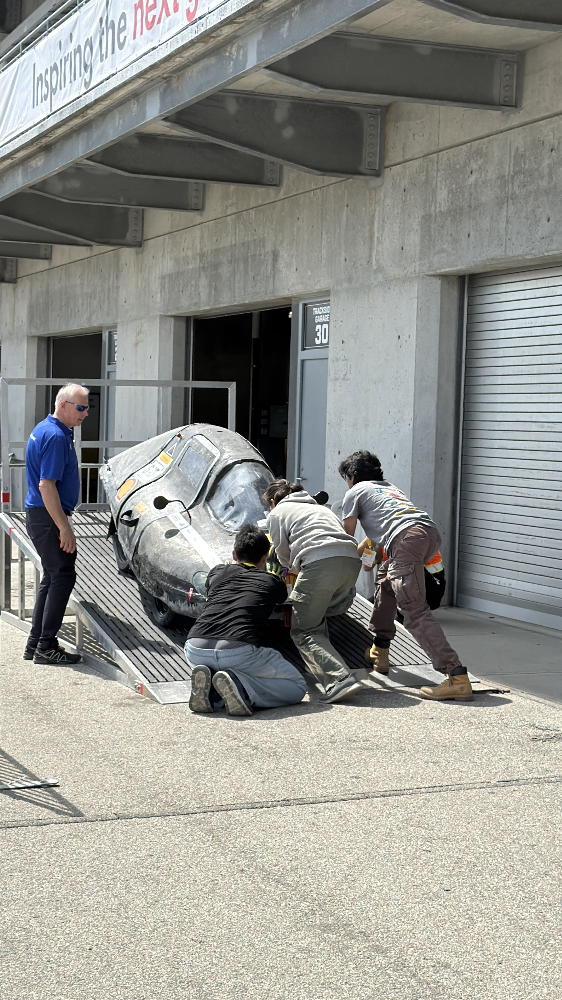
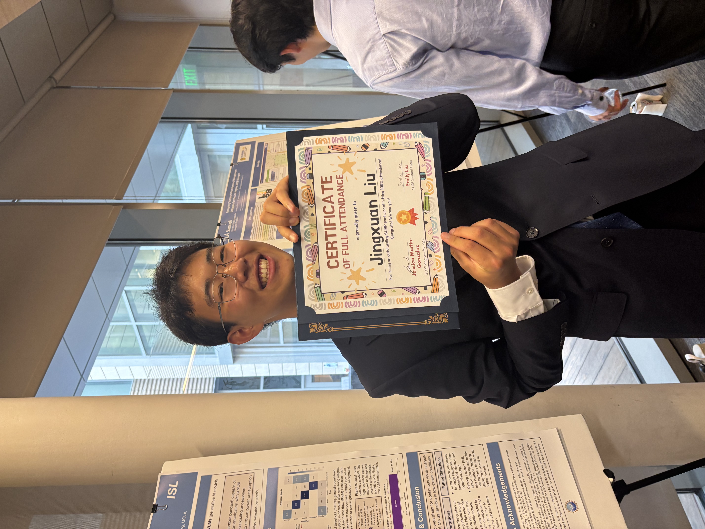

Hardware that connects power, sensing, and intelligence.
I’m Jason Liu. I design power electronics, embedded systems, mixed-signal circuits, and controls—then use simulation and hardware evidence to make them better.
Power electronicsEmbedded systemsAnalog circuitsControlsPCB design
Selected work
Designed from the system level down.
Four projects spanning isolated power conversion, edge AI, robotics, and vehicle electronics. Each status is stated plainly: built, simulated, or awaiting fabrication.
01Designed & simulated
Bruin Racing · Supermileage
48 V to 12 V isolated power conversion.
A 120 W active-clamp forward converter for a hydrogen fuel-cell vehicle, combining custom magnetics, synchronous rectification, sensing, protection, and digital control. Battery charging remains part of the intended system; the interface is still under validation.
120 W
target output
200 kHz
switching frequency
< 0.8%
simulated ripple window
Engineering decision
Correcting the transformer model from 18 µH to 180 µH changed the switching conclusion and removed an unsupported ZVS claim.

LTspice design and verification · simulation only
02Prototype built
UCLA Integrated Sensors Laboratory
Two cameras. One selective vision pipeline.
A wearable that uses a Himax WiseEye 2 for continuous low-power detection, then triggers an ESP32-S3 and OV5640 for a higher-resolution crop and cloud scene understanding.

Dual-camera enclosure

Integrated ESP32-S3, Himax, and camera hardware
0.833reported average mAP50
INT8quantized YOLOv5n
BLEselective image transfer
2-stagelocal detection → cloud context
03Built · core functions demonstrated
UCLA IEEE Micromouse
A compact robot built around custom control hardware.
A two-layer STM32F205 board integrating dual motor drive, encoder feedback, four-direction IR sensing, power regulation, and debug access. Firmware used timer-based PWM, quadrature capture, and a 1 kHz control path.
01Custom PCB from schematic through assembly
02Time-multiplexed IR acquisition with ADC and DMA averaging
03Closed-loop straight and turn control on a practice kit
The robot did not complete a competition maze; flood-fill planning is intentionally not presented as a hardware result.

Assembled final robotCustom two-layer PCB
04PCB designed · not fabricated
Bruin Racing · Low Voltage
Vehicle electronics, from board architecture to field debugging.
I designed the rear-control circuits and PCB around team-assigned interfaces for sensing, lighting, power, and CAN. On the prior vehicle system, I used simple transmit/receive firmware and physical harness isolation to restore differential communication.

Rear-control PCB layout

2026 Supermileage vehicle · Indianapolis

About
I like the point where continuous-time hardware meets digital control.
I’m an electrical engineering student at UCLA interested in analog circuits, power electronics, embedded systems, and controls. I enjoy building systems that have to work through real constraints—noise, timing, safety, efficiency, and limited compute or energy.
Outside engineering, I enjoy photography and playing basketball.